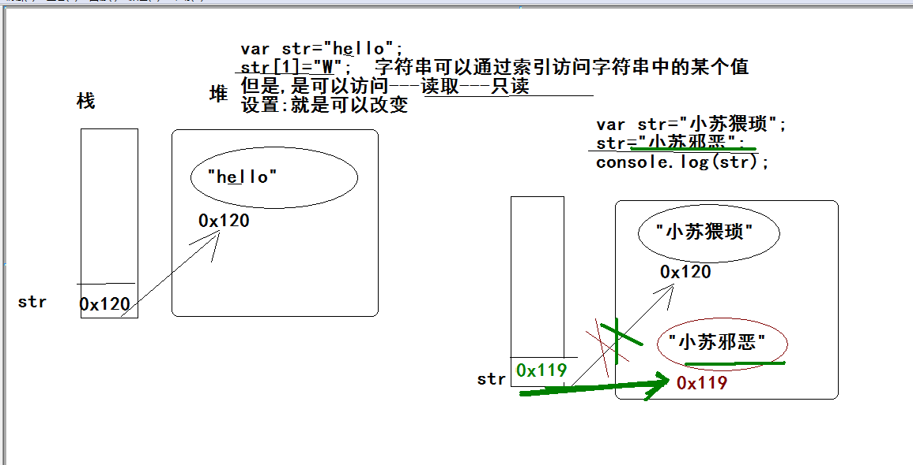

字符串特性: 不可变性, 字符串的值是不能改变
字符串的值之所以看起来是改变的, 那是因为指向改变了 ,并不是真的值改变了
var str = "123";
str = "456";
console.log(str);//456
var str = "hello";
str[1] = "W"; //字符串可以通过索引访问字符串中的某个值 不会变
//但是,是可以访问---读取---只读
var str = "小苏好猥琐";
str = "小苏好邪恶了";//重新赋值
console.log(str);
